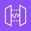
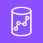
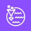
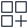
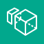

CLFSAA
第8章 連携・分析・AIのサービス
この章は、サービス名とその役割を対応づけて覚えることが中心です。扱うサービスは多いものの、5つの分類に整理すると全体を把握しやすくなります。
- 連携：疎結合の考え方と、SQS・SNS・EventBridge・Step Functions・API Gateway
- データ分析：Kinesis・Glue・Athena・EMR・Redshift・Quick Sight・OpenSearch・Lake Formation
- AI・機械学習：SageMaker・Bedrock・Amazon Q と、用途別の AI サービス
- 移行：Migration Hub・Application Migration Service・DMS と「7つの R」
- その他の頻出サービス：Amplify・IoT Core・WorkSpaces・Connect
1. 連携 —— 疎結合とメッセージングのサービス
システムは複数のコンポーネント（サーバーやプログラム）で構成されます。コンポーネント同士が直接呼び出し合い、互いの状態に強く依存している状態を密結合、間にキューなどの仲介役を置き、依存を弱めた状態を疎結合といいます。AWS は、障害に強くスケールしやすい設計として疎結合を推奨しています。
飲食店の注文処理に置き換えると分かりやすくなります。密結合は、注文を受けた担当者が調理担当に直接手渡しし、受け取られるまで待つ運用です。調理側が混雑すると、受付も止まります。
疎結合は、受付担当が注文票を所定の棚（キュー）に置いてすぐ次の受付に戻る運用です。調理担当は自分の処理能力に合わせて棚から取り出します。調理担当が一時的に不在でも、注文票は失われません。
（障害発生中）
アクセスが急増しても、キューに蓄積されるだけで受付処理は継続できます。
- メッセージ
- コンポーネント間で受け渡すデータの単位。注文内容や処理依頼など。
- キュー
- メッセージを到着順に一時保管する領域。英語の queue（待ち行列）に由来。
- プッシュ
- 送信側から受信側へ能動的に配信する方式。SNS が該当。
- ポーリング
- 受信側が定期的に問い合わせてデータを取得する方式。SQS が該当。
- サーバーレス
- 利用者がサーバーの構築・運用を行わずに済むサービス形態。基盤の管理は AWS が担う。

| サービス | 役割 | 配信方式 | 要点 |
|---|---|---|---|
| メッセージを保持する | ポーリング（受信側が取得） | 疎結合・バッファリング | |
| 複数の宛先へ同時配信 | プッシュ | Pub/Sub・ファンアウト | |
| EventBridge | イベントを振り分ける | ルールに基づく配信 | イベント駆動・定期実行 |
| Step Functions | 処理順序を制御する | ワークフロー管理 | 再試行・分岐 |
| API Gateway | 外部リクエストの受付 | リクエスト/レスポンス | API の公開・管理 |
SQS の Q は Queue（待ち行列）＝ 保持する。SNS の N は Notification（通知）＝ 一斉に知らせる。
- 「コンポーネントを疎結合にしたい」「処理が追いつかないときにリクエストを保持したい」→ SQS
- 「1つの通知を複数の宛先（メール・SMS など）に送りたい」→ SNS
- 「AWS で発生したイベントをきっかけに処理したい」「定期実行したい」→ EventBridge
- 「複数の Lambda を順番に実行し、エラー時は再試行したい」→ Step Functions
2. データ分析のサービス
データ分析は、「収集 → 加工 → 蓄積 → 分析 → 可視化」という流れで捉えると、各サービスの位置づけを整理できます。
（リアルタイム）
Redshift（DWH）
（旧 QuickSight）
- ストリーミングデータ
- 継続的に発生し続けるデータ。クリック履歴、センサー値、ログなど。
- ETL
- Extract（抽出）・Transform（変換）・Load（格納）。データを分析しやすい形に加工して格納する処理。
- データレイク
- 形式を問わず、データを元の形のまま大量に保管する場所。AWS では S3 が中心となる。
- DWH（データウェアハウス）
- 分析用に整理・構造化したデータを蓄積するデータベース。Redshift が該当。
- SQL
- データベースに対して検索・集計などを指示するための言語。
- BI
- Business Intelligence。データをグラフやダッシュボード（指標を一覧表示する画面）で可視化し、意思決定に活用すること。
- ビッグデータ
- 一般的なコンピューター1台では処理しきれない規模のデータ。


Athena はギリシャ神話の知恵の女神。データレイク（S3）に対して問い（SQL）を投げると答えが返るサービスと結びつけます。
Kinesis はギリシャ語で「運動」。流れ続けるデータ（ストリーミング）を扱うサービスです。
- Athena（S3 に直接 SQL・サーバーレス）と Redshift（データをロードして大規模に集計する DWH）を混同しないこと。「S3 のデータをそのまま」「アドホック（その場限り）な分析」であれば Athena です。
- 「リアルタイム」「ストリーミング」とあれば Kinesis。Glue はバッチ処理（まとめて処理）向けです。
- 可視化（BI）は QuickSight / Quick Sight。CloudWatch のダッシュボード（監視用）とは目的が異なります。
3. AI・機械学習のサービス
AI 関連のサービスは、3つの層に分けて整理します。上の層ほどすぐに利用でき、下の層ほど自由度が高く独自に構築できます。
- 上の層（学習済み AI サービス）：画像認識や音声の文字起こしなど、特定の用途向けに学習済みの機能を API で呼び出すだけで使える。機械学習の専門知識は不要。
- 中間の層（生成 AI）：Bedrock で各社の基盤モデルを選び、自社の用途に合わせてアプリケーションを構築する。
- 下の層（機械学習基盤）：SageMaker AI で、自社のデータから独自のモデルを構築・学習・運用する。
- 機械学習（ML）
- 大量のデータからパターンや規則をコンピューターに学習させる技術。
- モデル
- 機械学習によって作られた判断・予測の仕組み。データを入力すると予測結果を出力する。
- 生成 AI
- 文章・画像・プログラムなどを新たに生成する AI。
- 基盤モデル（FM）
- 大量のデータで事前学習された、幅広い用途に使える大規模な AI モデル。生成 AI の土台となる。
- 自然言語処理（NLP）
- 人間が日常的に使う言語（自然言語）をコンピューターで解析・処理する技術。
- OCR
- 画像内の文字を認識し、テキストデータに変換する技術。
下の層・中間の層：独自に構築する／生成 AI
上の層：用途別の学習済み AI サービス
| サービス | 機能 | 名前の手がかり |
|---|---|---|
| Rekognition | 画像・動画を解析し、顔や物体を識別する | Recognition（認識） |
| Textract | 書類の画像から文字や表を抽出する（OCR） | Text ＋ Extract（抽出） |
| Comprehend | 文章の意味や感情（肯定的か否定的か）を分析する | Comprehend（理解する） |
| Polly | テキスト → 音声（読み上げ） | Polly は英語圏でオウムの定番の名前（話す） |
| Transcribe | 音声 → テキスト（文字起こし） | Transcribe（書き起こす） |
| Translate | 文章を翻訳する | Translate（翻訳する） |
| Lex | チャットボット（対話型インターフェース）を構築する | Alexa と同じ技術を基盤とする |
| 社内文書から質問に合致する回答を探すインテリジェント検索 | 「検索」のサービス | |
| Personalize | 利用者ごとのレコメンド（推奨）を生成する | Personal（個人）向け |
目 ＝ Rekognition（画像・動画を見る）／ 文字を読む ＝ Textract
耳 ＝ Transcribe（聞いて書き起こす）／ 口 ＝ Polly（話す）
理解 ＝ Comprehend（文章の意味を把握する）／ 通訳 ＝ Translate／ 対話 ＝ Lex
- 「機械学習の専門知識なしで」画像認識・翻訳などを利用したい → 上の層（Rekognition・Translate など）
- 「独自の ML モデルを構築・トレーニング・デプロイしたい」→ SageMaker（AI）
- 「基盤モデルを使って生成 AI アプリケーションを構築したい」「インフラ管理なしで」→ Bedrock
- 「コールセンターの通話を文字起こしし、顧客の感情を分析したい」→ Transcribe ＋ Comprehend
Polly と Transcribe は変換の方向が逆です。Polly は「テキスト→音声」、Transcribe は「音声→テキスト」。
Textract と Comprehend も混同しやすい組み合わせです。Textract は画像から文字を抽出するだけで、文章の意味を解析するのは Comprehend です。
4. 移行（マイグレーション）のサービス
オンプレミスのシステムを AWS へ移すことをマイグレーションといいます。

データベース移行戦略「7つの R」
| R | 意味 | 具体例 |
|---|---|---|
| Rehost（リホスト） | 変更せずにそのまま移す。リフト＆シフトとも呼ぶ | オンプレミスのサーバーを EC2 へ複製する |
| Replatform（リプラットフォーム） | 一部を最適化して移す | 自前のデータベースを RDS に置き換える |
| Refactor（リファクタリング） | クラウド向けに設計し直す | サーバーレスやマイクロサービスに作り替える |
| Repurchase（リパーチェス） | 別の製品（SaaS など）に切り替える | 自社運用の CRM を SaaS 製品に置き換える |
| Retire（リタイア） | 不要なシステムを廃止する | 利用者のいないアプリケーションを停止する |
| Retain（リテイン） | 当面は移行せず残す | 制約のあるシステムをオンプレミスで維持する |
| Relocate（リロケート） | VMware 環境などをそのままの形でクラウドへ移す | VMware Cloud on AWS へ移す |
※以前は Relocate を除いた「6つの R」でしたが、現在は「7つの R」が基本です。
5. その他の頻出サービス

🧠 想起練習
本文を見ずに答えを思い出してから、各項目を開いて確認してください。